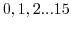

Next: Playing the bass line Up: Composition 001 Previous: synth 1
[inlet time], which wil be connected to the timebase
in the outer patch. Let's divide
time into bars and measures and beats using a modulo
operator. The output of [mod n] is bounded within 0 to n-1, n modulo n
is zero, so we can get a bar counter by pushing the output from our
counter through [mod 16]. This message stream will now count
 in total sixteen steps.
[select a b c] will output a bang on one of three
outputs corresponding to a, b and c if that value that matches the
input message. Any ordering of values is allowed, but you
will have to remember more carefully if you make a non-obvious
sequence of values to match. Because the counter is cycling up over 16 steps
we can use something like [select 4 12] to place a couple of
beats in the 4 and 12 positions of a 16 beat bar.
If we say [select 0 2 4 6 8 10 12 14] we will get eight
beats on the offbeat, each activating a different bang output. That's
pretty useful, so all we have to do to create a short melody is
combine select with some messages. The value in the select
box represents the timing pattern, the message boxes contain notes.
The notes get out of the patch through [outlet notes] from
where they will be connected to the synth.
C-bassline-seq.pd
Andy Farnell